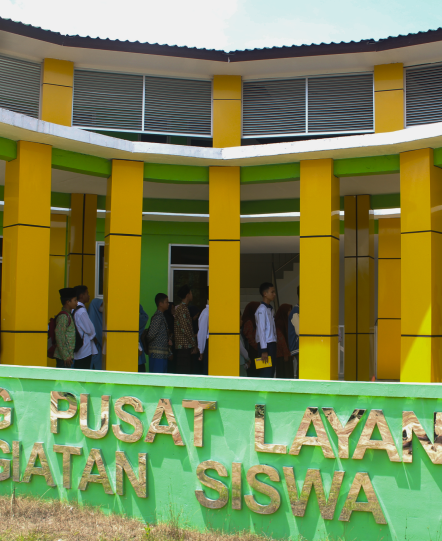

Profil
Tentang Kami
Membangun Generasi Cendekia dari Bangka Tengah
Madrasah unggulan akademik berasrama di Kepulauan Bangka Belitung yang memadukan penguasaan IPTEK, penguatan IMTAK, dan pembentukan karakter calon pemimpin masa depan.
MAN Insan Cendekia Bangka Tengah merupakan Madrasah Aliyah Negeri unggulan akademik di bawah Kementerian Agama Republik Indonesia. Sebagai madrasah berasrama, MAN Insan Cendekia Bangka Tengah tidak hanya berfokus pada prestasi akademik, tetapi juga pada pembinaan keagamaan, kedisiplinan, kemandirian, dan karakter siswa. Dengan semangat Prestasi, Mandiri, Islami, madrasah ini hadir untuk mencetak generasi yang unggul, berakhlak, dan siap berkontribusi bagi masyarakat serta bangsa.
Tahun
Telah Berdiri
Telah Berdiri


1990-an
Gagasan Insan Cendekia
Gagasan Insan Cendekia lahir dari pemikiran B.J. Habibie melalui BPPT untuk menyatukan IPTEK dan IMTAK dalam pendidikan unggulan.

1996
SMU Insan Cendekia Serpong
SMU Insan Cendekia Serpong mulai beroperasi sebagai cikal bakal MAN Insan Cendekia di Indonesia.
2000
Pengalihan Pengelolaan
Pengelolaan Insan Cendekia dialihkan dari BPPT ke Departemen Agama, lalu masuk ke sistem pendidikan madrasah.
2001
Resmi Menjadi MAN IC
Insan Cendekia resmi berubah menjadi MAN Insan Cendekia melalui SK Menteri Agama RI No. 490 Tahun 2001.

2015
Hadirnva MAN IC Bangka Tengah
MAN IC Bangka Tengah hadir di Kepulauan Bangka Belitung sebagai bagian dari perluasan MAN IC nasional.

27 April 2015
Peresmian Resmi
MAN IC Bangka Tengah resmi berdiri secara kelembagaan di Desa Sungkap, Kecamatan Simpangkatis, Kabupaten Bangka Tengah.